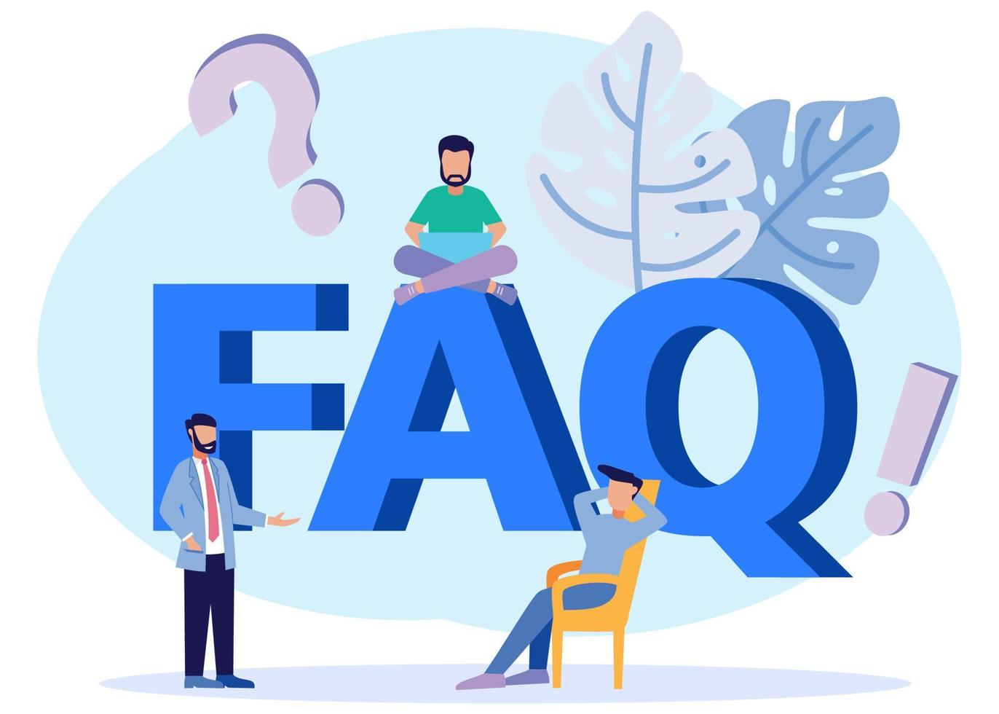

What are the advantages of using a retainer?
With the long-term use of a teeth retainer, all the hard work you put into getting and wearing braces pays off.
What happens if I don’t wear my retainer?
It’s normal for teeth to move over time. If you don’t wear your retainer, your teeth will shift and move. They can become crooked, crowded or misaligned. Or you can develop an overbite. That’s why most dental providers prescribe the use of a teeth retainer after braces come off.